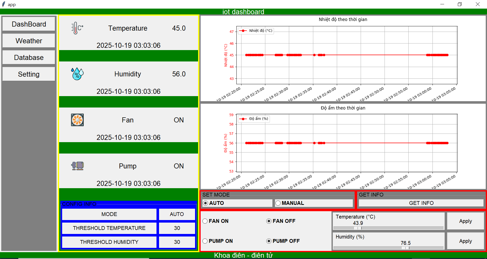
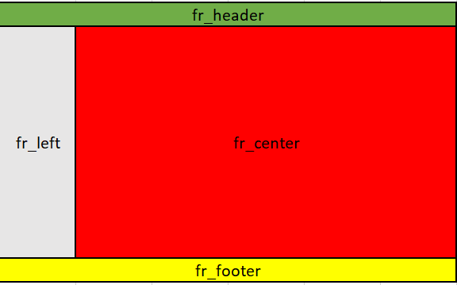
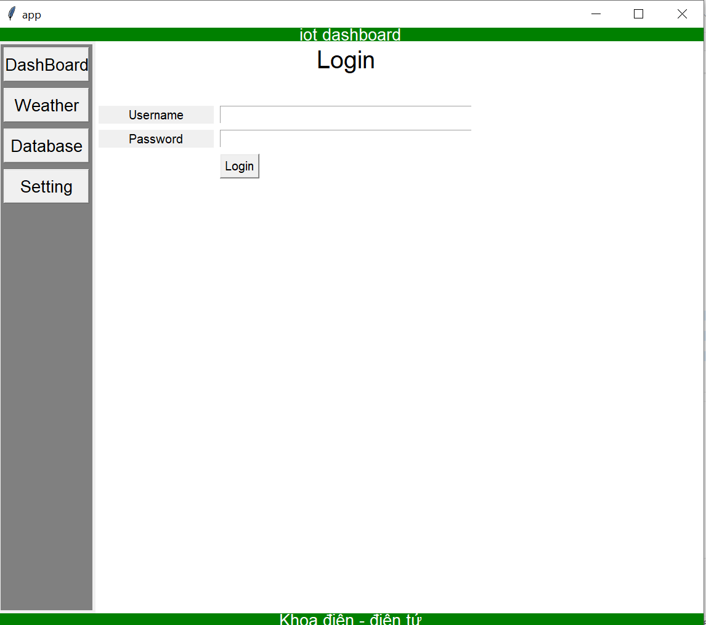
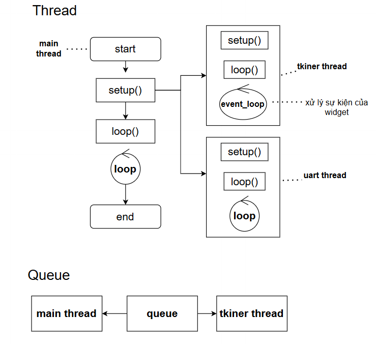

<section> <!-- HEADER --> <div class="title-header"> <img src="images/logo.png" alt="Logo" /> </div> <!-- CENTER --> <div class="title-center"> <h1>Lập trình Gui sử dụng Tkiner</h1> <h3>Giảng viên: Ths.Lâm Du Đạt</h3> <p>Email: datld@donga.edu.vn</p> </div> <!-- FOOTER --> <div class="title-footer"> <p>Trường Đại học Đông Á : Khoa Điện – Điện tử</p> </div> </section> --- # Lập trình GUI với tkiner ## Mục tiêu bài học <div class="content"> - Nắm được bố cục layout cơ bản - Năm được các widget cơ bản : button , label, entry - Nắm được cách tạo chuyển trang - Nắm được nguyên lý cập nhập giao diện - Nắm được cách sử dụng hàng đợi và đa luồng trong ứng dụng - Nắm được cách giao tiếp ứng dụng với cổng serial </div> ## Chuẩn đầu ra <div class="content"> - Thiết kế được giao diện login - Thiết kế giao điện dashboard để hiển thị thông số cơ bản </div> --- ## Thành phần cơ bản của GUI <div class="content split-2"> <img src="images/window1.png" alt="window1.png" style="height:300px;width:auto"/> <img src="images/gui_1.png" alt="window1.png" style="height:300px;width:auto"/> </div> <div class="content"> - window : Cửa sổ giao diện - frame: Nơi chứa các widget, xác định layout của giao diện - widget: Các thành phần tương tác với người dùng (button , textbox , label , chart ...) </div> --- ## Bố cục giao diện <div class="content split-2">  <div> - Khu vực tiêu đề (header) - Khu vực chuyển hướng (navigate) - Khu vực nội dung (content) - Khu vực chân trang (footer) </div> </div> --- ## Cấu trúc chương trình tkiner <div class="content"> ```python # Thư viện tkiner import tkinter as tk from tkinter import ttk # Thư viện khác # Hàm xử lý sự kiện của widget # Tạo cửa sổ giao diện window = Tk() window.title('app') window.minsize(640,480) # Tạo bố cục layout # Tạo các widget # Gọi hàm loop() window.mainloop() ``` </div> --- ### Tạo bố cục layout cho window <div class="content"> - Chia cửa sổ window thành nhiều hàng và cột - Tạo các frame đặt vào cửa sổ để xây dựng bố cục - Sử dụng `columnconfigure(...)` và `rowconfigure(...)` để cấu hình dòng , cột của window - sử dụng `grid(...)` để đặt frame vào tọa độ cell tương ứng  </div> --- #### Cơ bản về gird layout và thuộc tính `sticky` <div> <img src="images/sticky.png" alt="sticky.png" style="height:500px;width:auto"/> </div> --- ### Tạo bố cục layout cho window (2) <div class="content"> ```python window.columnconfigure(0, weight=1) window.columnconfigure(1, weight=10) window.rowconfigure(0,weight=1) window.rowconfigure(1,weight=10) window.rowconfigure(2,weight=1) ``` <hr> ```python fr_header=tk.Frame(window,bg='green') fr_header.grid(row=0,column=0,columnspan=2,sticky='nswe') fr_left=tk.Frame(window,bg='gray') fr_left.grid(row=1,column=0,sticky='nswe',padx=5, pady=5) ``` - Bài tập: Làm tương tự cho frame center (fr_center) và frame footer (fr_footer) </div> --- ### Tạo layout cho frame và widget <div> - Một frame cha có thể chứa nhiều frame con - Một frame con lại có thể đặt nhiều widget - Sử dụng `columnconfigure(...)` và `rowconfigure(...)` để cấu hình dòng , cột của frame cha - Sử dụng `grid(...)` để đặt các frame con vào tọa độ cell tương ứng của frame cha - Sử dụng `grid(...)` để đặt widget vào tọa độ cell tương ứng của frame con <img src="images/widget.png" alt="widget.png" style="height:300px;width:auto"/> </div> --- ### Tạo layout cho frame và widget (2) <div class ="content split-2">  <div> - <mark>frame chứa các widget</mark> - `fr_center_login` nằm trong fr_center - <mark>Widget - label: login , username, password - entry: username, password - button: login </div> </div> - Bài tập : `Tạo fr_center_login` nằm trong `fr_center` --- ### Widget Label <div class="content"> - Label dùng để làm nhãn thông tin cho người dùng thao tác : username, password... ```python label1=tk.Label(fr_header,text='iot dashboard', font=("Arial", 20), fg="white",bg="green") label1.grid(row=0,column=0,sticky='nswe') ``` - Đọc và thay đổi giá trị của label: ```python #đọc giá trị value = label1["text"] #thay đổi giá trị label1.config(text='ứng dụng iot') ``` <mark>Bài tập</mark>: tạo label2 có giá trị "Khoa điện - điện tử" gắn vào fr_footer </div> --- ### Widget Entry <div class="content"> - Widget `Entry` dùng để thu thập dữ liệu người nhập (textbox) ```python txt_user=tk.Entry(fr_center_login,font=("Arial", 15)) txt_user.grid(row=2,column=1,sticky='nswe',padx=5,pady=5) ``` - ĐỌc và ghi dữ liệu widget `Entry` ```python #Đọc entry str_user=txt_user.get() #Ghi entry txt_user.delete(0, tk.END) txt_user.insert(0, "dat") ``` - <mark>Bài tập</mark>: Hãy tạo fr_center_login chứa các widget như trong ứng dụng </div> --- ### Widget Button <div class="content"> - Widget `button` dùng để bắt sự kiện người dùng nhấn nút trên giao diện để xử lý: Nhấn nút login, nhấn nút xác nhận... - Khi người dùng nhấn nút sẽ **callback** đến một **hàm** ta đã định nghĩa để xử lý (ứng dụng luôn có một event-loop nghe sự kiện và callback) - Với **callback** đến hàm có tham số ta bắt buộc phải dùng hàm không tên `lambda` để **bọc** lời gọi. - Các tham số truyền vào bên trong có thể dùng dạng **keyword arguments** (`kwargs`). </div> --- ### widget Button (2) <div class ="content"> ```python def btn_login_click_handler(**kwargs): str_user=kwargs['user'].get() str_password=kwargs['password'].get() if str_user=='dat' and str_password=='1': #xử lý login ok else: #xử lý login fail # Tạo nút button login gắn vòa fr_center_login btn_login=tk.Button(fr_center_login,text='Login') btn_login.grid(row=4,column=1,sticky='nsw') # Đăng kí hàm callback cho btn_login btn_login.config(command=lambda: btn_login_click_handler(user=txt_user,password=txt_password) ``` </div> --- ### Thiết kế tính năng chuyển trang (navigation) <div class="content"> - Tính năng chuyển trang cho phép người dùng nhấn vào các nút điều khiển , giao diện sẽ hiện những trang khác nhau <img src="images/navigation.png" alt="navigation.png" style="height:300px;width:auto"/> - Các frame con sẽ nằm trong frame cha - Dùng phương thức `tkraise()` để đưa frame con lên trên đầu - Ví dụ : fr_center_login.tkraise() sẽ đua fr_center_login lên trên cùng </div> --- ### Thiết kế tính năng chuyển trang (navigation) (2) <div class="content"> - Bài tập: Thiết kế một frame chứa các nút chuyển trang với các yêu cầu sau - fr_left chứa 2 button : login và dashboard - Thiết kế `fr_center_login` chiếm hết `fr_center` có màu vàng - Thiết kế `fr_center_dashboard` chiếm hết `fr_center` có màu xanh - Khi nhấn nút login đưa `fr_center_login` lên đầu - Khi nhấn nút dashboard đưa `fr_center_dashboard` lên đầu - Gợi ý: button login và dashboard đều **callback** đến hàm `navigate_click_handler` ```python def navigate_click_handler(fr:Frame): fr.tkraise() btn_dashboard.config(command=lambda: navigate_click_handler(fr_center_dashboard)) ``` </div> --- ## Cập nhập giao điện <div class="content"> - Tất cả các sự kiện widget đều do một vòng lặp sự kiện (event loop) theo dõi, vòng lặp này được khởi tạo sau khi gọi `window.mainloop()` - Để cập nhập được giao diện cần phải ta cần tạo một bộ `timer` để quét sự kiện - Hàm `window.after(...)` cho phép sau khoảng thời gian t ms sẽ thực hiện **callback** đến hàm `ui_event_loop` ta định nghĩa. - Cuối hàm `ui_event_loop` ta gọi lại hàm `window.after(...)` như vậy ta đã tạo ra một vòng lặp dành cho cập nhập giao diện ```python def ui_event_loop(): global window # Dùng hàng đợi để xử lý cập nhập giao diện window.after(100,ui_event_loop) window.after(100, ui_event_loop) window.mainloop() ``` </div> --- ### Cập nhập giao diện (2) : thread và queue <div class="content">  </div> --- ### Cập nhập giao diện (3) : Xây dựng hàng đợi sự kiện <div> ```python import queue import threading ui_queue=queue.Queue() # Tạo hàng đợi def ui_event_loop(): global window global ui_queue while not ui_queue.empty(): data = ui_queue.get() if data['type']=='SENSOR': data_sensor=data['data'] print(data_sensor) window.after(100,ui_event_loop) # Giả lập data data={'type':'SENSOR','data':{'temp':37.5,'hum':95.5}} ui_queue.put(data) ``` </div> --- #### Cập nhập giao diện (4) : Tạo đối tượng Serial <div class ="content"> - Trong thực tế ứng dụng của ta cần lấy dữ liệu từ các input như : uart , api , cơ sở dứ liệu ...Để đẩy các dữ liệu lên giao diện ta thường tạo `thread` độc lập với `tinker thread` và giao tiếp qua hàng đợi - ví dụ tạo giao tiếp serial , nhận thông tin và đẩy lên giao diện ```python import serial # pip install pyserial import json import queue ser = serial.Serial(port='COM4', baudrate=9600, parity=serial.PARITY_NONE, bytesize=serial.EIGHTBITS, stopbits=serial.STOPBITS_ONE, timeout=None) # chờ vô hạn ``` </div> --- #### Cập nhập giao diện (5) : Tạo thread xử lý nhận Serial <div class="content"> ```python def rx_loop(ser): buffer = bytearray() while True: data = ser.read(1) # Chờ đến khi có 1 byte buffer.extend(data) while ser.in_waiting: buffer.extend(ser.read(ser.in_waiting)) print(buffer) # xử lý buffer ở đây rx_thread=threading.Thread( target=rx_loop, # gọi callback khi khởi động args=(ser,), # kiểu tupple daemon=True) # đóng thread khi main thread đóng rx_thread.start() # bắt đầu thread trước loop của tinker ``` </div> --- #### Cập nhập giao diện (6) : Tạo thread xử lý phát Serial <div class="content"> ```python tx_queue=queue.Queue() def tx_loop(ser): global tx_queue while True: data = tx_queue.get() ser.write(data) # hàm phát dữ liệu tx_thread=threading.Thread( target=tx_loop, args=(ser,), daemon=True) tx_thread.start() ``` </div> --- ### Bài tập <div class ="content"> - Thiết kế fr_center_dashboard hiển thị dữ liệu từ arduino gửi lên (giả lập protues) thông qua `uart` với giao diện như sau <img src="images/dasboard_center.png" alt="dasboard_center.png" style="height:300px;width:auto"/> </div>